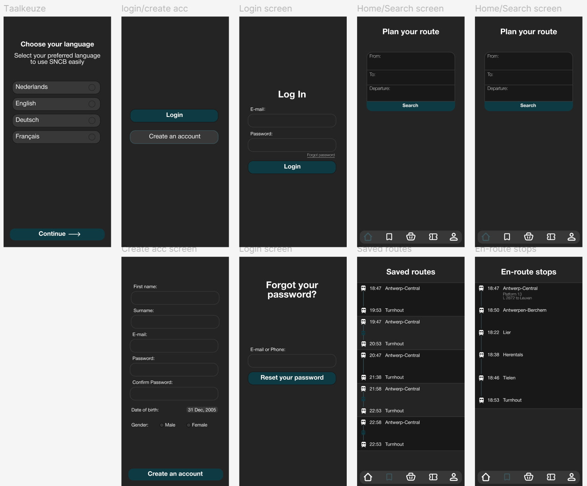

Precious Cotteleer
1GDM2
Deze les hadden we een aanvullende opdracht gekregen voor de treinschermen,
het was de bedoeling om op figma een mobiele trein app te maken
Ik was begonnen met een taalkeuze scherm, deze zal alleen zichtbaar zijn als je de app voor het eerste open doet.
Vervolgens kom je op het login/maak een account scherm (ik had alles in het Engels gemaakt),
als je op create account drukt kan je een account maken en vervolgens kom je op de home-page, heb je al een account kan je inloggen.
Als je je wachtwoord vergeten bent, kan je je wachtwoord resetten, door je e-mail in te geven.
Helemaal onder je mobiele scherm kan je een navigatie-balk vinden die je door heel de app brengt.
Voor de volledige app heb ik ook hetzelfde kleurenschema gebruikt als bij de treinschermen,
zo blijft alles consistent en herkenbaar voor de gebruiker.
